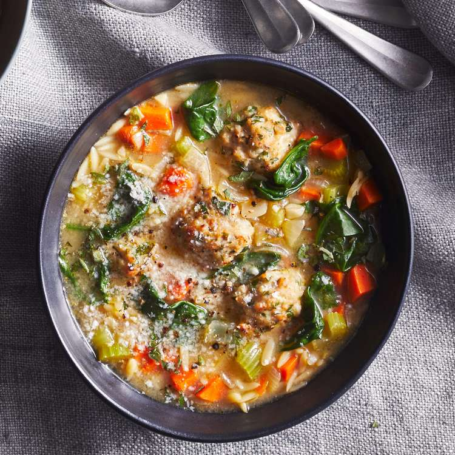

Home
Italian Wedding Soup

Description
Forget the marble-size meatballs you find in many versions of this Italian
Wedding Soup. In this easy recipe, they're full-size, full-flavored and
plenty filling.
Ingredients
- 4 tablespoons extra-virgin olive oil, divided
- 1 ⅓ cups chopped yellow onion
- ⅔ cup chopped carrot
- ⅔ cup chopped celery
- 2 tablespoons minced garlic
- 6 cups unsalted chicken broth
- 6 ounces orzo, preferably whole-wheat
- 1½ tablespoons chopped fresh oregano
- ½ teaspoon kosher salt
-
24 cooked chicken meatballs (12 ounces), such as Easy Chicken Meatballs
- 4 cups baby spinach
- ¼ cup grated Parmesan cheese
Directions
-
Heat 1 tablespoon oil in a large pot or Dutch oven over medium-high
heat. Add onion, carrot, celery and garlic; cook, stirring occasionally,
until the onion is translucent, 4 to 5 minutes.
-
Add broth, cover and bring to a boil. Add orzo, oregano and salt; cover
and cook, stirring occasionally, until the orzo is just tender, about 9
minutes.
-
Stir in meatballs and spinach; cook until the meatballs are heated
through and the spinach is wilted, 2 to 4 minutes.
-
Serve sprinkled with cheese and drizzled with the remaining 3
tablespoons oil.